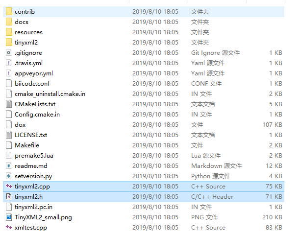

最近遇到个需要在C++中处理XML文件的需求，虽然对此方面并不是很熟，但好在有GitHub上的awesome-cpp项目的帮助，还是收获了足够的相关知识。
常用的或被推荐的XML类库有以下数个选项，不过相较于纯C完成的类库个人还是更倾向于C++的类库：
TinyXML是在寻找更多信息时被多次提及的，因为并不想花费过多时间在做选择题上，于是其似乎成了最终的赢家。
但未曾想它自身还有两个版本。
TinyXML与TinyXML2的相同点：
TinyXML2的优点：
TinyXML的优点：
TinyXML2的第2及第4项优点是我更中意的，所以还是选它吧。
在其GitHub的仓库中下载相关文件，tinyxml2

找到tinyxml2.h与tinyxml2.cpp两个文件，将它们添加至你的工程项目中，这便是所有需要的。
#include <iostream>
#include <random>
#include "tinyxml2.h"
using namespace tinyxml2;
void writeXMLFile()
{
XMLDocument doc;
auto delaration = doc.NewDeclaration();
doc.InsertFirstChild(delaration);
auto root = doc.NewElement("root");
doc.InsertEndChild(root);
auto id = doc.NewElement("id");
id->SetText(666);
root->InsertEndChild(id);
auto name = doc.NewElement("name");
name->SetText("Ken");
name->SetAttribute("blogger", true);
root->InsertEndChild(name);
doc.SaveFile("sample.xml");
}
XMLDocument* readXMLFile()
{
auto doc = new XMLDocument;
doc->LoadFile("sample.xml");
auto root = doc->RootElement();
auto id = root->FirstChildElement("id");
std::cout << id->GetText() << std::endl;
auto name = root->FirstChildElement("name");
std::cout << name->GetText() << std::endl;
std::cout << name->Attribute("blogger") << std::endl;
return doc;
}
int main()
{
writeXMLFile();
auto doc = readXMLFile();
auto root = doc->RootElement();
auto id = root->FirstChildElement("id");
doc->DeleteNode(id);
auto randomid = doc->NewElement("randomid");
std::default_random_engine e;
std::uniform_int_distribution<int> u;
auto r = u(e, decltype(u)::param_type(1000000, 9000000));
randomid->SetText(r);
root->InsertFirstChild(randomid);
doc->Print();
delete doc;
}